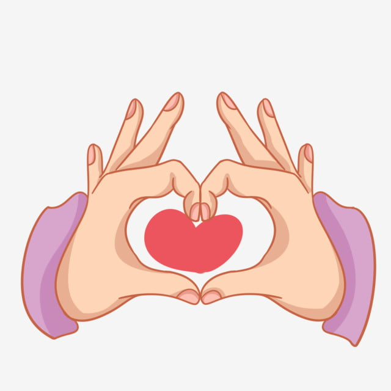
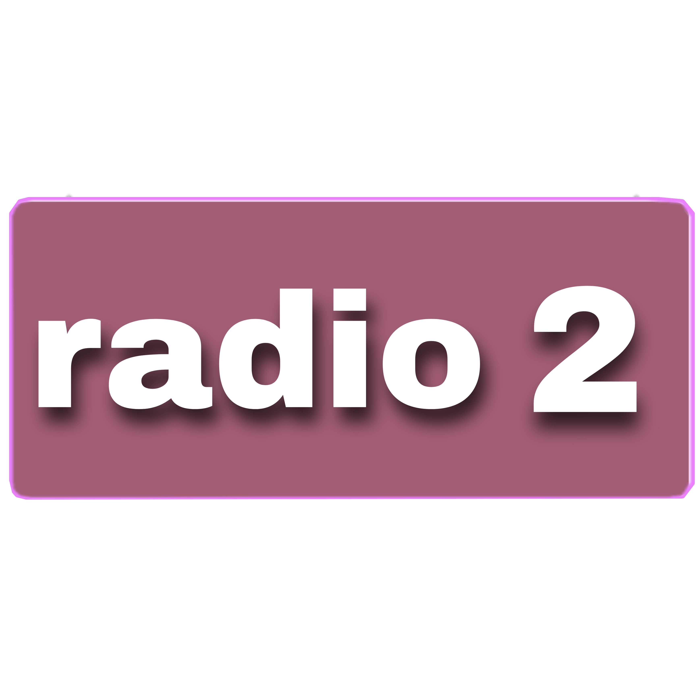
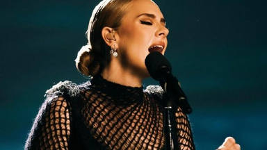
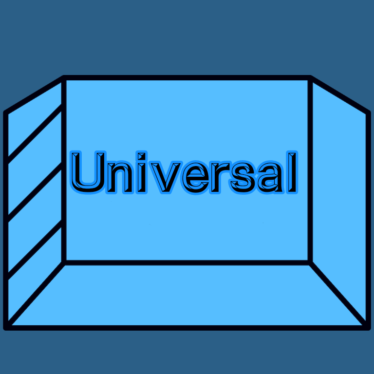
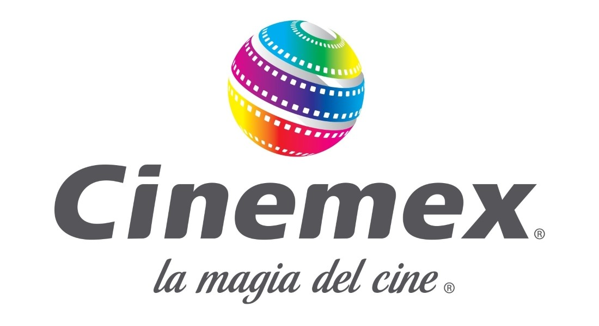
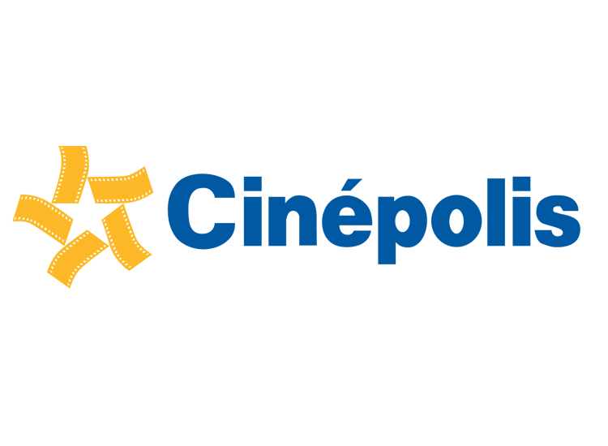
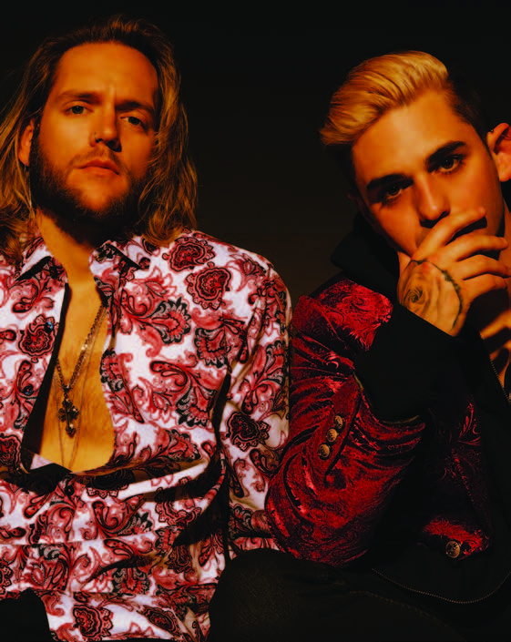
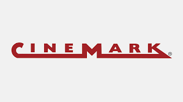
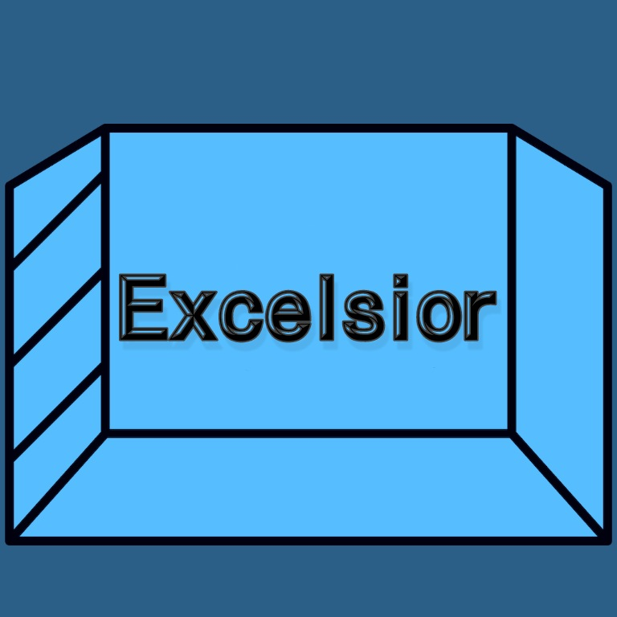
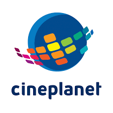

MI MUSICA, CANTANTES Y ARTISTAS
MI MUSICA, CANTANTES Y ARTISTAS
FAVORITOS
|
|
|
|
 |
| CANTANTES FAMOSOS |
|
Noticias |
Peliculas |
|  |
Adele Laurie Blue Adkins, conocida simplemente como Adele, es una cantautora y multinstrumentista brit´nica. Es una de las artistas musicales con mayores ventas del mundo, con más de 120 millones de ventas entre discos y sencillos.
Adele tiene un tipo de voz de mezzosoprano,150 con un rango vocal que va de C3 a B5, abarcando dos octavas y seis notas.
Fecha de nacimiento: 5 de mayo de 1988
Edad actual: 34
Lugar de nacimiento: Tottenham (Reino Unido)
Generos: R&B, pop rock
Ultimos lanzamientos: nuevo álbum, "30", saldrá el 19 de noviembre.
|
|
 |
 |
 |
Linkin Park es una banda estadounidense de rock alternativo procedente de Agoura Hills, California formada en 1996. Integrada por Mike Shinoda, Dave Farrell, Joe Hahn, Brad Delson, Rob Bourdon y Chester Bennington, este último como voz principal. La banda comenzó con sus primeros trabajos musicales de manera independiente, en la que grabaron su primer material, llamado Xero; sin embargo, no tuvieron éxito en la búsqueda de un sello discográfico, ya que nadie mostraba interés por su trabajo. Fue hasta 1999, que con el apoyo de Jeff Blue, el entonces vicepresidente de Warner Records, lograron firmar su primer contrato. El nombre del grupo es un juego de palabras que hace referencia al Lincoln Park en Santa Mónica.
Generos: Dance/electronica y Alternativa/Independiente
Ultimos lanzamientos: One More Light en
2017 |
 |
|
 |
|  |
Neffex (estilizado como NEFFEX) es un proyecto musical estadounidense de Bryce Savage (nacido como Brandon Horth) que originalmente incluía a Cameron Wales. Produjeron remixes y canciones originales caracterizadas por una mezcla de géneros electrónicos y rap. Antes de que Savage continuara con el proyecto por su cuenta, escribió letras y cantó mientras Wales creaba instrumentales y realizaba la edición. Han lanzado muchas de sus canciones libres de regalías (sin copywrite) para que los creadores de contenido y similares puedan usarlas.
Ultimos Lanzamientos: Don't Let Go (2022)
Sober (ft. Neffex) - Josh A (2022)
Catch Me If I Fall (2022)
Tell Me What You Want (2022)
A Little F*cked Up (2022) |
|
|
 |
 |
Shawn Peter Raul Mendes (Pickering, Ontario, 8 de agosto de 1998) es un cantante, compositor y modelo canadiense. Obtuvo seguidores en 2013, cuando comenzó a publicar versiones de canciones en la aplicación para compartir videos de Vine.1 Al año siguiente, llamó la atención del gerente artístico Andrew Gertler y del jefe de A&R de Island Records, Ziggy Chareton, lo que lo llevó a firmar un acuerdo con dicho sello discográfico. Desde entonces, lanzó tres álbumes de estudio, encabezó tres giras mundiales y recibió varios premios. En 2015, publicó su primer álbum Handwritten, que tuvo éxito en los Estados Unidos al entrar en la número 1 del Billboard 200, al igual que su sencillo «Stitches» que ingresó a las diez principales posiciones del Billboard Hot 100 en los Estados Unidos y Canadá, y la número uno en la lista de sencillos de Reino Unido. |
 Regresar al curriculum Regresar al curriculum |
 |
 |